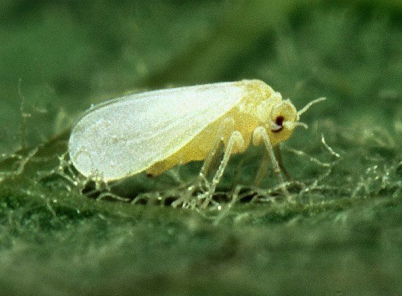

सफ़ेद मक्खीSilverleaf Whitefly
Bemisia tabaci · Aleyrodidae · INS-0084

- Scientific name
- Bemisia tabaci (Gennadius, 1889)
- Family
- Aleyrodidae
- Hindi
- सफ़ेद मक्खी
- Local names
- safed makkhi, safed makhi, white fly, whitefly
- Status here
- native
- IUCN
- not evaluated
- Review
- audited and independently read
When to look कब देखें
Expected mainly in March, April, May, June, July, August, September, October, November.
Uses and possibilities उपयोग और संभावनाएँ
Drawn from the documented uses in the profile below, where each is labelled traditional, current or a research lead. All uses →
सफ़ेद मक्खी / Silverleaf Whitefly
Bemisia tabaci (Gennadius, 1889) — Aleyrodidae
सफ़ेद मक्खी — टमाटर, मिर्च, कपास पर सफ़ेद तेल जैसी मक्खियों की भीड़। बहुत छोटी, पत्ती के नीचे लगी रहती हैं, रस चूसती हैं। खुद से नुकसान कम, पर जिस वायरस को फैलाती हैं उससे पूरी फसल खराब हो जाती है। मिर्च और टमाटर में सब से बड़ा वायरस दुश्मन।
Quick Identification त्वरित पहचान
| Feature | Description |
|---|---|
| Adult colour | Bright white or pale yellow, covered with waxy powder |
| Size | 1–1.5 mm long; tiny, easily overlooked |
| Wings | Two pairs, held roof-like over the body; covered in white waxy powder |
| Location on leaf | Predominantly on the undersides of leaves |
| Nymphs | Pale green to yellow, flat, oval, scale-like; clusters |
| Honeydew and mould | Sticky residue and black sooty mould on lower leaves and fruit |
| Damaged plant | Silvering of the leaf (loss of chlorophyll); yellowing and wilting |
| Host preference | Heavy on Tomato, Chilli, cotton; light feeding on many other plants |
Field tip: Turn over a leaf of affected Tomato or Chilli: you will see clouds of tiny white insects rise and resettle. The underside and stems are covered with waxy-looking pale clusters. Black sooty mould below is a sure sign.
हिंदी — कैसे पहचानें: टमाटर की पत्ती उलटो — सफ़ेद बादल उड़ जाए। पत्ती के नीचे सफ़ेद मक्खियों की भीड़, सफ़ेद पाउडर जैसी। काली फफूंद भी दिखेगी।
Morphology आकारिकी
Biometrics:
| Measurement | Range |
|---|---|
| Adult body length | 1–1.5 mm |
| Wing length | 1.2–1.8 mm |
| Egg | 0.2 mm, oval, inserted in plant tissue |
| Nymph (1st instar / crawler) | 0.2 mm, mobile |
| Nymph (2nd–4th instar) | 0.5–1 mm, sessile, scale-like |
| Pupal case | 0.8–1 mm, flat |
Adult: Tiny, with wings held roof-like. Body white or pale yellow; wings white and waxy. Antennae 7-segmented. Mouthparts piercing-sucking. Eyes dark, prominent. The waxy powder coating gives a silvery appearance.
Nymph: Very different from adult. First-instar nymphs (crawlers) are mobile, oval, pale green to yellow. Subsequent instars become sessile, flattened, scale-like in appearance, with waxy filaments projecting from the body margin.
Egg: Oval, pale, inserted into the leaf epidermis; usually in rows on the undersurface, often arranged in concentric circles from the female's feeding spot.
हिंदी: बहुत छोटा, सफ़ेद, पाउडर जैसा। लार्वा सफ़ेद, तराज़ू जैसा, पत्ती पर चिपका। अंडे पत्ती में।
Behaviour & Ecology व्यवहार और पारिस्थितिकी
The silverleaf whitefly is a highly polyphagous insect, feeding on over 600 plant species, but showing preference for solanaceous crops (Tomato, Chilli, Potato), cotton, cucurbits, and beans. Feeding causes two kinds of damage: direct toxin injection causes silvering of leaves (yellowing of chlorophyll), and the insect's role as a vector of begomoviruses (plant viruses) is far more damaging. The whitefly transmits tomato leaf curl virus, cotton leaf curl virus, chilli mosaic viruses and others in a persistent, non-circulative manner: the virus is acquired in the whitefly's saliva and transmitted to the next plant fed upon, without the virus entering the whitefly's body.
Development from egg to adult takes 20–30 days at 25–28°C, with females laying 50–300 eggs. There are 7–10 overlapping generations per year in warm conditions. The insect overwinters as nymphs on perennial hosts and on volunteer plants; populations build rapidly in spring and summer. The pest is entirely dependent on continuous host availability; without suitable plants it cannot persist. Unlike the mealybug, the whitefly has many natural enemies in the Indian landscape, but these are often eliminated by broad-spectrum spraying, allowing population resurgence.
हिंदी: 600 तरह के पौधे खाता है, पर टमाटर-मिर्च को सब से प्यार। खुद से कम नुकसान, वायरस से ज़्यादा। गर्मी में तेज़ी से बढ़ता है। मकड़ी और लेडीबग इसे खाते हैं।
Life Cycle / Phenology जीवन चक्र
| Stage / season | Event |
|---|---|
| Egg, 4–6 days | Laid in rows on leaf undersurface |
| Nymph crawler, 2–3 days | Moves to feeding site, becomes sessile |
| Nymph (3 more instars), 12–15 days | Scale-like, waxy; on leaf |
| Pupa, 3–5 days | Immobile pupal case |
| Adult, 4–6 weeks | Feeds and lays eggs |
| Total cycle | 20–30 days at 25–28°C |
| March–April | Population builds on early Tomato and Chilli |
| May–October | Heavy infestations; multiple overlapping generations |
| Monsoon | Peak populations during humidity |
| November–February | Low populations; overwinters on perennials and volunteers |
हिंदी: अंडे से वयस्क तक 20–30 दिन गर्मी में। एक साल में सात पीढ़ियाँ। सर्दियों में कम, गर्मी में ज़्यादा।
Host Plants or Prey आहार
Preferred hosts:
- Tomato (Solanum lycopersicum) — primary host
- Chilli (Capsicum spp.)
- Cotton (Gossypium spp.)
- Potato (Solanum tuberosum)
- Beans: green beans, mung bean
Over 600 plant species documented as hosts, including many weeds.
Virus transmission:
- Tomato leaf curl virus (ToLCV) — begomoviruses
- Cotton leaf curl virus — begomoviruses
- Chilli leaf curl virus — begomoviruses
- Other viruses: watermelon yellow mosaic, cassava brown streak
Predators / Natural Enemies शत्रु
- Spiders: web-building spiders, particularly jumping spiders and wolf spiders
- Predatory beetles: Transverse ladybird (Menochilus sexmaculatus), Coccinella species; feed on nymphs
- Parasitoid wasps: Eretmocerus and Encarsia species (egg and nymph parasitoids; available commercially)
- Hoverflies: Episyrphus balteatus and other Syrphus species
- Entomopathogenic fungi: Beauveria bassiana, Isaria (effective under 70–85% humidity)
- Predatory mites: Phytoseiulus and Amblyseius
Agricultural / Human Relevance कृषि प्रासंगिकता
Direct and virus damage. The silverleaf whitefly causes direct feeding damage (silvering, yellowing) but is far more damaging as a vector of begomoviruses. Tomato leaf curl virus and cotton leaf curl virus can cause total crop loss. The virus-vector relationship is persistent and non-circulative: the virus is transmitted only to susceptible plants; the whitefly is immune.
Today's management:
- Resistant and tolerant varieties: Varieties with resistance to begomoviruses (particularly important for Tomato and Chilli) are available and recommended (ICAR, PAU breeding programs).
- Cultural practices: Removal of volunteer Tomato, Chilli and related weeds from fields at harvest. Proper spacing to allow air circulation. Yellow sticky traps for monitoring.
- Insecticide spray: Neem oil or soap-based sprays for light infestations; selective insecticides (spinosad, imidacloprid) for heavy infestations. Critical to time spray to target the crawler stage.
- Biological control: Conservation of natural enemies (spiders, parasitoid wasps, predatory beetles) by avoiding broad-spectrum sprays and maintaining field margins with flowering plants.
- Mesh screening: Use of 50-mesh netting in seedling nurseries prevents whitefly entry and virus transmission before transplanting.
Research direction (a lead, not a result). Characterisation of virus-resistant Tomato varieties for the region; population genetics of begomovirus strains in eastern UP; efficacy of parasitoid Eretmocerus under local conditions.
हिंदी: वायरस रोधक किस्मों को अपनाओ। पिछली पत्तियों को हटाओ। पीली पट्टियों से पकड़ो। नीम का छिड़काव। खेत के किनारे फूल। शरद में स्वेच्छा पौधे नष्ट करो।
Expected Locally स्थानीय रूप से अपेक्षित
Not a field record. Written from published accounts for eastern Uttar Pradesh. The silverleaf whitefly has been documented in Tomato and Chilli fields throughout the region since the early 2000s.
अभी तक स्थानीय पुष्टि नहीं। यह विवरण प्रकाशित स्रोतों से है।
Expected on Tomato, Chilli, and cotton in all of Basti district during the warm season (March–November), with heaviest infestations during the monsoon and post-monsoon when humidity is high. A photograph of clusters of white insects on the undersides of Tomato or Chilli leaves, with date and location, would confirm a local record.
Distribution वितरण
Global range: Pantropical and subtropical; found in all warm agricultural regions worldwide. Native to the Indian subcontinent and surrounding regions.
In India: All States; major pest of Tomato, Chilli, cotton, and other crops.
In Uttar Pradesh: Throughout; particularly damaging in eastern plains.
In Basti district / eastern UP: Expected on all Tomato, Chilli, and cotton crops during the growing season; year-round on perennials and volunteers.
Research Questions शोध प्रश्न
Anyone can investigate these | कोई भी इन प्रश्नों की जाँच कर सकता है
- Which Tomato or Chilli variety in your village is attacked least by whiteflies? / कौन सी किस्म में सब से कम सफ़ेद मक्खी है? — Inspect different varieties side by side.
- Do fields with sticky yellow traps placed early (at transplanting) have lower whitefly populations later? — Compare trapped and non-trapped fields.
- How many days does it take from egg to first flying adult on your local varieties? — Observe eggs; track development daily.
- Does removal of volunteer Tomato and Chilli plants in December reduce infestation in the next Tomato crop? / अक्टूबर में स्वेच्छा पौधे हटाने से अगली बार कम आता है? — Compare two adjacent fields.
- Which natural enemy (spider, ladybird, wasp) is most abundant when whitefly populations are controlled? — Sample both insects and their natural enemies weekly.
Similar Species मिलती-जुलती प्रजातियाँ
| Species | How to tell apart | हिंदी |
|---|---|---|
| Sweet Potato Whitefly (Bemisia tabaci B biotype) | Genetically distinct but morphologically nearly identical; requires DNA to separate; slightly prefers Ipomoea and cassava | आलू की सफ़ेद मक्खी, बहुत मिलती-जुलती |
| Spiralling Whitefly (Aleurodicus dispersus) | Much larger (2–3 mm); deposits eggs in spiral pattern; rare in field crops | बड़ी, पर कम आम |
| Greenhouse Whitefly (Trialeurodes vaporariorum) | Smaller (1–1.2 mm); occurs mainly in nurseries and greenhouses, not field crops | घर की, बाहर कम |
Field rule: Tiny white insects on undersides of Tomato, Chilli, or cotton leaves, with honeydew and sooty mould, causing silvering and wilting: silverleaf whitefly.
Taxonomy & Classification वर्गीकरण
Original description. Described by Gennadius in 1889 in Entomologische Nachrichten as Aleurodes tabaci from specimens on tobacco. The genus Bemisia was erected by Quaintance and Baker in 1913. Tabaci refers to tobacco, the host plant at the time of description.
Subspecies or biotypes: Multiple biotypes (genetic strains) are recognised: the B biotype (B strain or Bemisia tabaci sensu stricto) is the most invasive. Some workers treat the B biotype as a separate species (Bemisia argentifolii), but the taxonomy remains unsettled. Biotypes differ in host preference, virus transmission efficiency, and insecticide susceptibility.
Family and order placement. Order Hemiptera (true bugs), family Aleyrodidae (whiteflies). The genus Bemisia comprises highly polyphagous whiteflies.
Phylogenetic notes. The B biotype is derived from Asian populations and has spread globally only in the last 30 years, becoming the dominant agricultural biotype. The genetic basis of its invasiveness and virus-vector competence is under active research.
IUCN status rationale. Not evaluated. As a widespread agricultural pest and virus vector, it is not assessed by the IUCN.
Photo Gallery फोटो गैलरी
Photos needed आवश्यक फोटो
- [ ] Whitefly cluster on tomato leaf undersurface (टमाटर की पत्ती के नीचे)
- [ ] Adult whitefly (कीट ऊपर से)
- [ ] Silvering damage on tomato leaf (पत्ती का चाँदी जैसा नुकसान)
No photos yet — add field photos to media/species/whitefly/ and run node scripts/sync_photos.js.
References संदर्भ
- Gennadius, P. (1889). Aleurodes tabaci. Entomologische Nachrichten 15: 330–331. [original description, as Aleurodes tabaci]
- Quaintance, A.L. & Baker, A.C. (1913). Classification of the Aleyrodidae. U.S. Department of Agriculture, Bureau of Entomology, Technical Series 27.
- Srinivasan, R. (2008). Integrated pest management for tomato and Chilli in India: an Information Kit. ICRISAT, Patancheru, India.
- Kumud, Devi, L. & Sharma, M. (2016). Distribution of Bemisia tabaci B biotype and its impact on major agricultural crops. Indian Journal of Entomology 78(1): 34–41.
- Indian Council of Agricultural Research (2017). Integrated Pest Management Package for Vegetables. ICAR–NCIPM, New Delhi.
- GBIF Occurrence Data — Bemisia tabaci, India (2026).
Source file: species/fauna/insects/whitefly.md